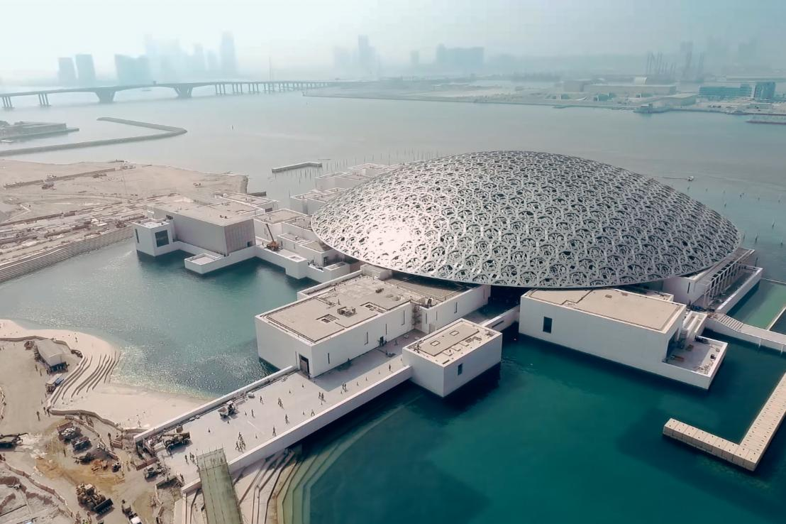
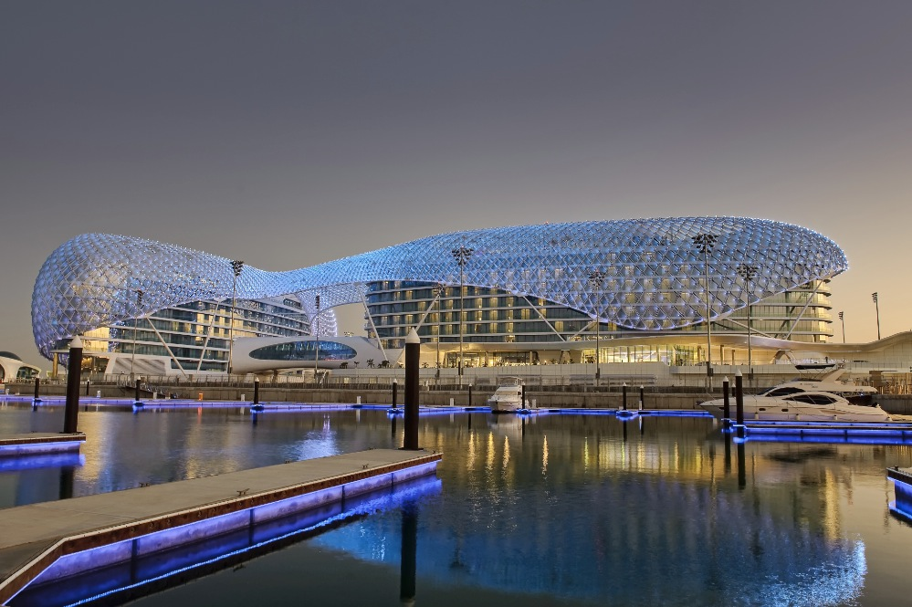
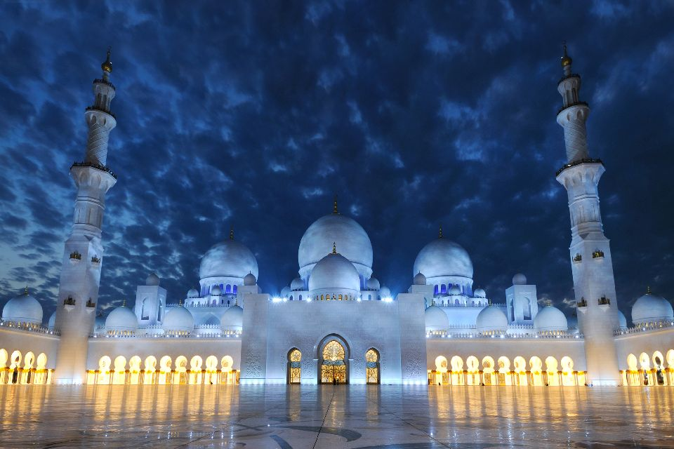

ABU DHABI
J'ai découvert les Emirats Arabes Unis il y a quelques années en faisant des recherches pour un concours de culture générale. C'est ainsi que j'ai appris que leur capitale était Abu Dhabi.Emerveillée par l'architecture des bâtiments dans cette ville, je me suis promise de m'y rendre un jour.
Quelques sites à Abu Dhabi
-
Louvre,Abu Dhabi

-
Hôtel & Circuit Yas Marina

-
Mosquée Cheikh Zayed

Le Louvre Abou Dhabi ou Louvre Abu Dhabi selon la translittération retenue par le musée dans ses publications officielles en français1, est un musée fondé en 2017.Inauguré le 8 novembre 2017 et ouvert au public le 11 novembre, ce musée, dépendant du musée du Louvre et installé dans une architecture confiée à l'architecte français Jean Nouvel, est créé après un accord intergouvernemental signé le 6 mars 2007 entre la France et l'émirat d'Abou Dabi.
L'île de Yas est une île artificielle construite par l'émirat d'Abou Dabi aux Émirats arabes unis. Cette île accueille le circuit Yas Marina de Formule 1, le Ferrari World Abu Dhabi, le parc aquatique Yas Waterworld, plusieurs parcours de golf, des terrains de polo, un centre équestre et des hôtels haut de gamme
La mosquée « Sheikh Zayed», avec sa superficie totale de 22 412 mètres carrés et sa capacité à accueillir jusqu'à 40 000 visiteurs, est la plus grande mosquée des Émirats arabes unis et la neuvième au rang mondial1. Son nom vient du Sheikh Zayed ben Sultan Al Nahyane, le premier président des Émirats arabes unis et commanditaire de l'édifice